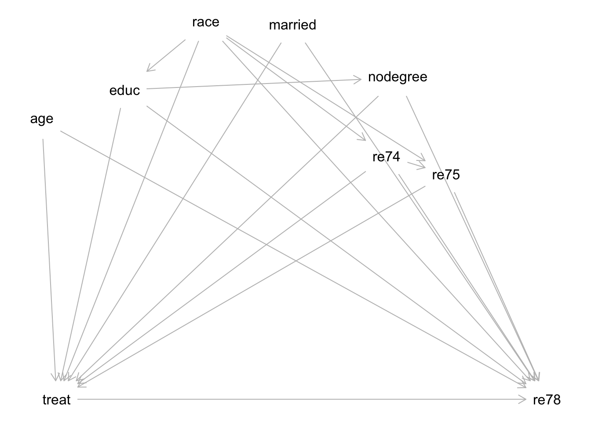
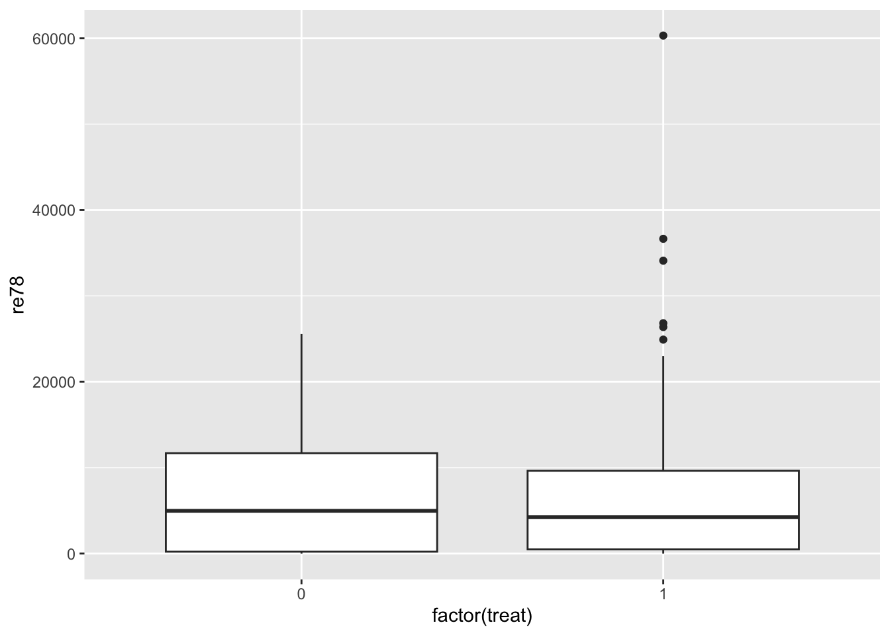
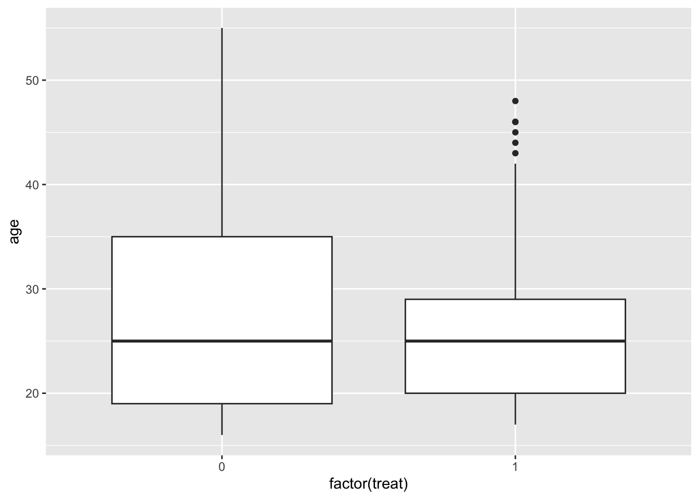
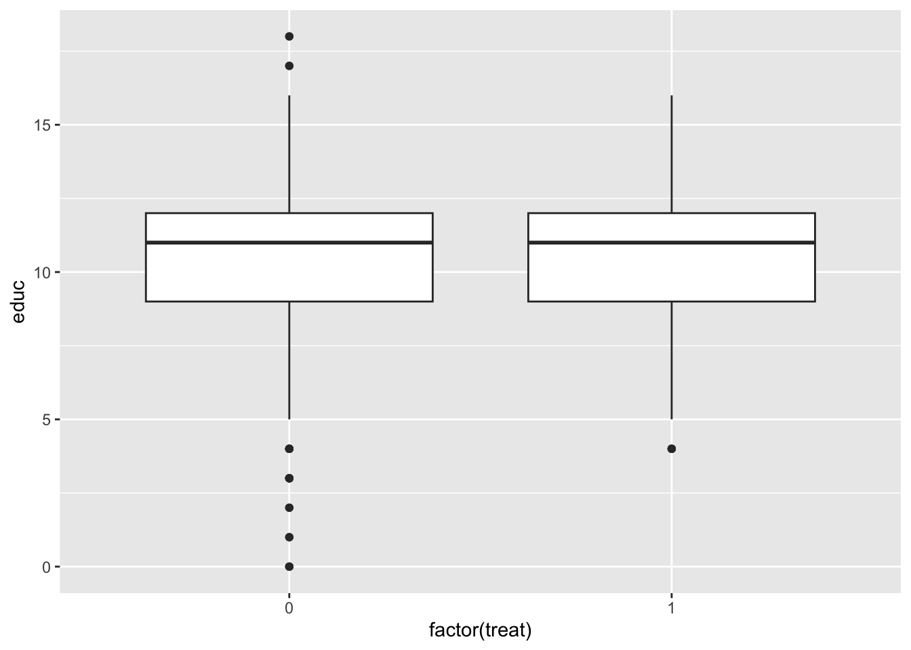
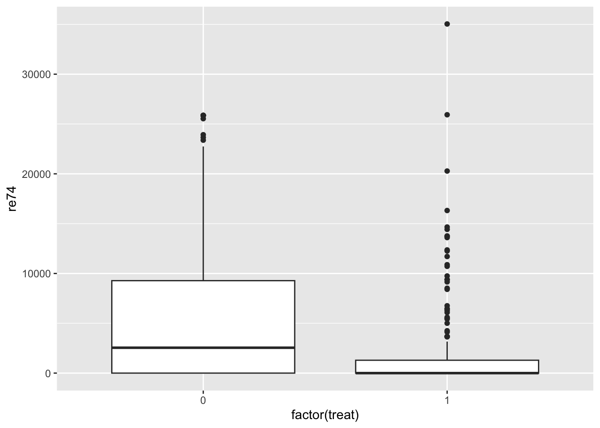
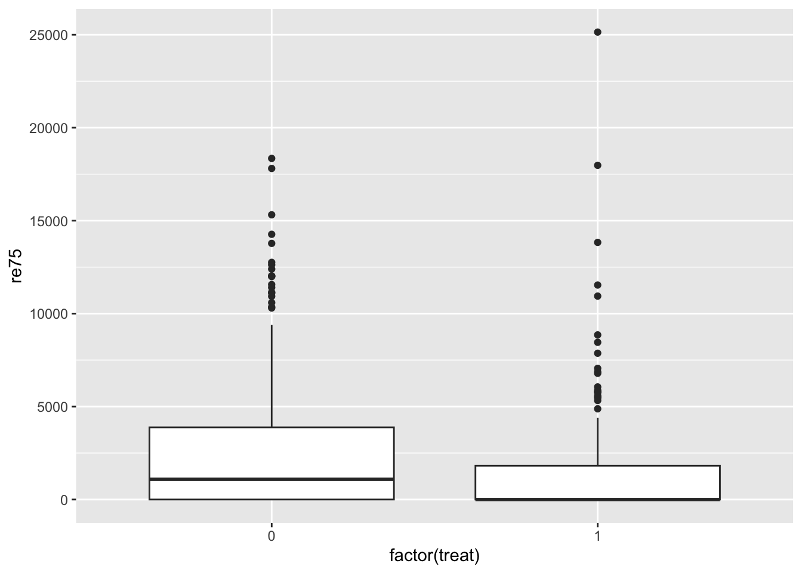
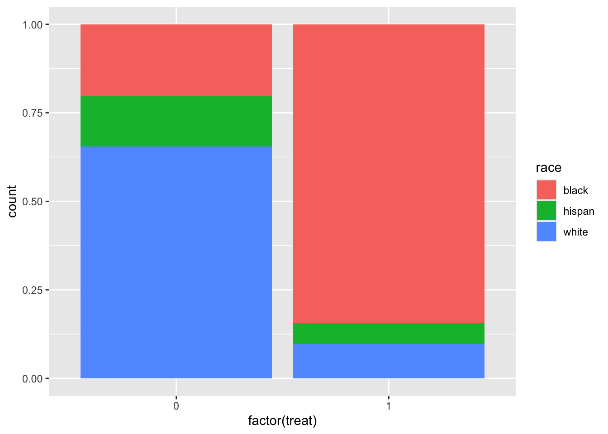
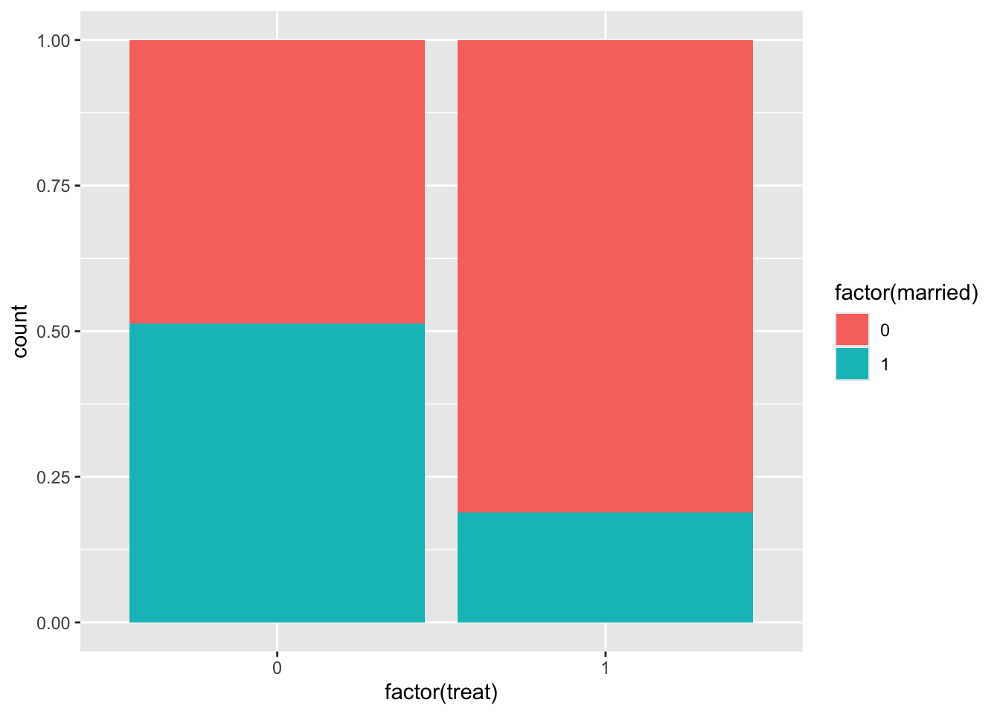
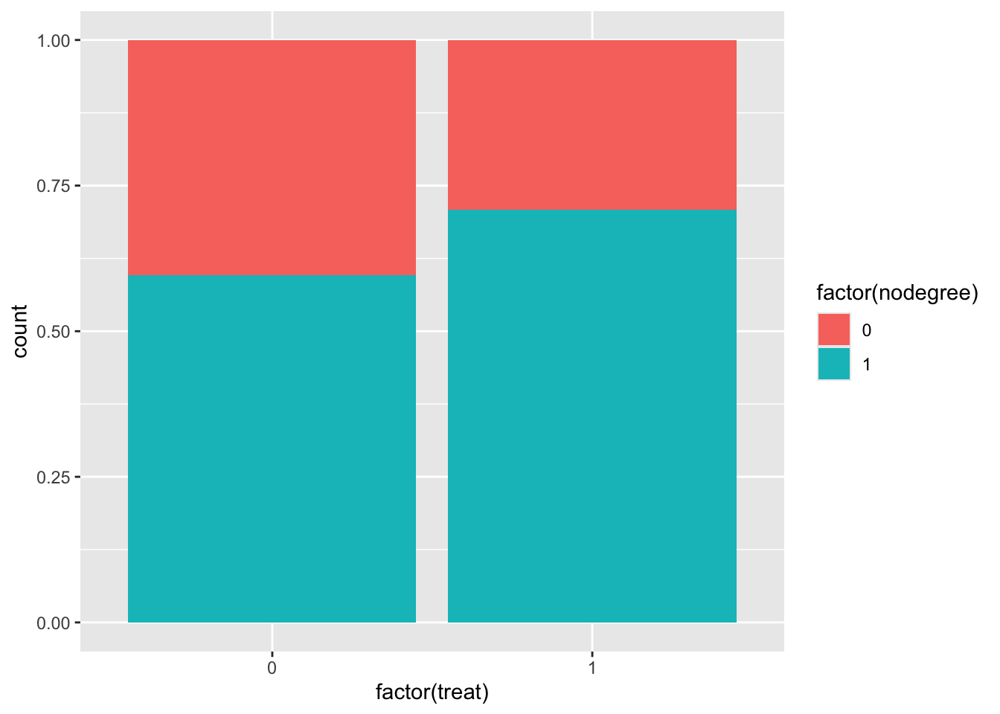
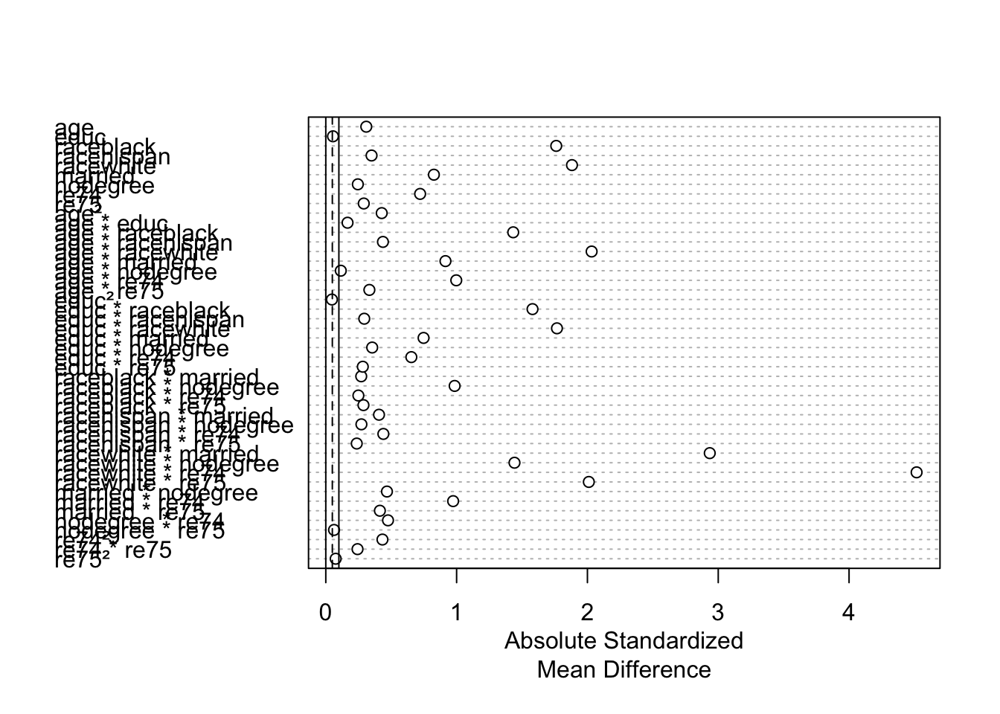

library(tidyverse)
library(broom)
library(ggdag)
library(MatchIt)
library(marginaleffects)
library(dagitty)
data(lalonde)Matching (Part 1)
You can download a template file for this activity here.
Discussion
Where were we?
In our discussion of causal graphs, we connected the presence of alternate explanations to the presence of open, noncausal paths.
Open noncausal paths create association between treatment A and outcome Y that are NOT due to the causal effect (create bias).
But what exactly does it mean to “block” noncausal paths with a set of variables Z?
- We have focused on conditioning:
- Stratification: holding the variables in Z constant at a fixed value (e.g., study dropout = no, age = 40)
- Regression modeling: including a variable in a regression model, we can look at the relationship between other variables and the outcome holding that variable fixed
More generally, “blocking” means to stop association flow by restricting variation.
We define “matching” broadly to be any method that aims to equate (or “balance”) the distribution of covariates in the treated and control groups. This may involve 1 : 1 matching, weighting or subclassification.
Stuart, E. A. (2010). Matching Methods for Causal Inference: A Review and a Look Forward. Statistical Science, 25(1), 1–21. https://doi.org/10.1214/09-STS313
By making equal (balancing) the covariate distribution in the treatment groups we are restricting variation from transmitting from A to Y.
Overview of matching implementation
Design phase: Steps 1 - 3 Analysis phase: Step 4
Define “closeness”: choose the distance measure used to determine whether a case is a good match for another.
- The variables that are involved in our distance measure are the ones that block noncausal paths.
- We’ll look at exact matching and coarsened exact matching today which have a binary way of assigning distance: 0 if exact match, and infinity otherwise.
- Next time we’ll look at matching with other distance measures.
Implement that matching method for that closeness (distance) measure.
- Are we selecting matches or constructing a matched weighted sample?
- If we’re selecting matches, how many?
- If we’re weighting, how will weights decay with distance?
- What is the worst match? Possible to specify a caliper parameter: a distance such that units can only matched if they are less than or equal to this distance
Balance checking: Assessing the quality of the resulting matched samples, and perhaps iterating with steps 1 and 2 until well-matched samples result.
Analysis of the outcome and estimation of the treatment effect, given the matching done in step 3.
Causal estimands
An estimand is a quantity of interest.
So far we have only talked about the average causal effect (ACE), which is also called the average treatment effect (ATE):
\[ ATE = ACE = E[Y^{a=1} - Y^{a=0}] \]
- The ATE represents an effect across an entire population.
- Example: ACE = 30,000. On average, receiving treatment (like a job training program) increases wages by $30,000.
Also of interest are:
- Average treatment effect on the treated (ATT): \(E[Y^{a=1} - Y^{a=0} \mid A = 1]\)
- Average treatment effect on the controls (ATC): \(E[Y^{a=1} - Y^{a=0} \mid A = 0]\)
- Also referred to as the average treatment effect in the untreated (ATU)
We can illustrate the difference between these estimands with a potential outcome table:
| \(A\) | \(Y^{a=1}\) | \(Y^{a=0}\) | \(Y^{a=1}-Y^{a=0}\) |
|---|---|---|---|
| 1 | 70,000 | 10,000 | 60,000 |
| 1 | 80,000 | 20,000 | 60,000 |
| 1 | 90,000 | 30,000 | 60,000 |
| 0 | 10,000 | 10,000 | 0 |
| 0 | 20,000 | 20,000 | 0 |
| 0 | 30,000 | 30,000 | 0 |
- ATT = 60,000
- ATC = 0
- ATE = 30,000
When would we choose to use these different effects? See Greifer and Stuart, 2023 for more details.
ATT: What would have happened specifically to those who received treatment had they not received treatment? Should we withhold treatment from those receiving it? Was it a good thing that those receiving treatment received it?
ATC (ATU): What would have happened to the untreated had they received it? Should we expand the treatment program to those who did not receive it yet?
ATE: Should a treatment / policy be made available to the whole population?
Exploration
Data context: job training program
Did a job training program increase incomes?
The National Supported Work Demonstration project [was] a transitional, subsidized work experience program for four target groups of people with longstanding employment problems: ex-offenders, former drug addicts, women who were long-term recipients of welfare benefits, and school dropouts, many with criminal records. The program provided up to 12-18 months of employment to about 10,000 individuals at 15 locations across the country for four years. In ten of these sites – Atlanta, Chicago, Hartford, Jersey City, Newark, New York, Philadelphia, Oakland, San Francisco, and Wisconsin, 6,600 eligible applicants were randomly assigned either to experimental groups (offered a job in supported work) or to control groups, and an evaluation was conducted on the effects of the Supported Work Program. (See here for more details.)
These data were analyzed in LaLonde, 1986 and in Dehejia and Wahba, 1999. We’ll be using the Dehejia and Wahba data to estimate the causal effect of the job training program on income immediately following the program.
Variables of interest:
- Treatment/exposure:
treat(Individual was assigned to the job training program, 1 = yes, 0 = no) - Outcome:
re78(Individual’s income in 1978, in US dollars)
Possible confounders:
age: age in yearseduc: education in number of years of schoolingrace: the individual’s race/ethnicity, (Black, Hispanic, or White)married: an indicator for marital status (1 = married, 0 = not married)nodegree: an indicator for whether the individual has a high school degree (1 = no degree, 0 = degree)re74: income in 1974, in US dollarsre75: income in 1975, in US dollars
Causal graph
Consider the following causal graph for this context:
dag <- dagitty('
dag {
bb="0,0,1,1"
age [pos="0.129,0.176"]
educ [pos="0.247,0.140"]
married [pos="0.487,0.064"]
nodegree [pos="0.637,0.126"]
race [pos="0.363,0.062"]
re74 [pos="0.621,0.217"]
re75 [pos="0.706,0.238"]
re78 [outcome,pos="0.850,0.500"]
treat [exposure,pos="0.150,0.500"]
age -> re78
age -> treat
educ -> nodegree
educ -> re78
educ -> treat
married -> re78
married -> treat
nodegree -> re78
nodegree -> treat
race -> educ
race -> re74
race -> re75
race -> re78
race -> treat
re74 -> re75
re74 -> re78
re74 -> treat
re75 -> re78
re75 -> treat
treat -> re78
}
')
plot(dag)
Note: while subjects were randomized to placement in the job training program, this randomization happened over time such that the characteristics of the subjects changed over time—this resulted in systematic differences in characteristics between treatment groups.
Exercise: Describe the process of how you would select the variables needed to identify the causal effect of the job training program (treat) on 1978 incomes (re78). You don’t need to carry out the process by hand (unless you want to!) because this is a somewhat large graph.
You can use software to help by inputting this graph in DAGitty: copy the dag { ... } text in the dagitty() function above, and paste this text into the “Model code” pane on the right of the DAGitty interface.
In the top right, you will see a “Causal effect identification” box and a sufficient set of adjustment variables under “Minimal sufficient adjustment sets for estimating the total effect of treat on re78”.
Exercise: Identify one variable that is missing from this graph. How is it connected to other variables? How does its inclusion affect what variables are needed to block noncausal paths?
You can think about this one conceptually, but if it helps to actually update the graph, you can use DAGitty to make edits:
- To add a node: Click on the gray canvas and type the variable name.
- To add an arrow: Click one node and click a second node to add an arrow from the first to the second.
- To delete an arrow: First click the node where the arrow originates. Then click where the arrow points.
Naive comparison: unadjusted difference in outcome across treatment groups
To get a feel for the data, let’s look at a naive comparison: an unadjusted difference in outcome across the treatment groups:
# Because treat is encoded numerically as a 0/1 variable, factor(treat) is
# necessary within ggplot() to represent it as a categorical variable
ggplot(lalonde, aes(x = factor(treat), y = re78)) +
geom_boxplot()
lalonde %>%
group_by(treat) %>%
summarize(avg_income = mean(re78))# A tibble: 2 × 2
treat avg_income
<int> <dbl>
1 0 6984.
2 1 6349.mod_naive <- lm(re78 ~ treat, data = lalonde)
tidy(mod_naive, conf.int = TRUE)# A tibble: 2 × 7
term estimate std.error statistic p.value conf.low conf.high
<chr> <dbl> <dbl> <dbl> <dbl> <dbl> <dbl>
1 (Intercept) 6984. 361. 19.4 1.64e-65 6276. 7693.
2 treat -635. 657. -0.966 3.34e- 1 -1926. 655.At the other end of the spectrum, let’s examine a multiple linear regression model that adjusts for all of the variables needed to identify the causal effect:
mod_adjusted <- lm(re78 ~ treat + age + educ + race + married + nodegree + re74 + re75, data = lalonde)
tidy(mod_adjusted, conf.int = TRUE)# A tibble: 10 × 7
term estimate std.error statistic p.value conf.low conf.high
<chr> <dbl> <dbl> <dbl> <dbl> <dbl> <dbl>
1 (Intercept) -1174. 2456. -0.478 0.633 -5998. 3650.
2 treat 1548. 781. 1.98 0.0480 13.9 3083.
3 age 13.0 32.5 0.399 0.690 -50.8 76.8
4 educ 404. 159. 2.54 0.0113 91.9 716.
5 racehispan 1740. 1019. 1.71 0.0882 -261. 3740.
6 racewhite 1241. 769. 1.61 0.107 -269. 2750.
7 married 407. 695. 0.585 0.559 -959. 1772.
8 nodegree 260. 847. 0.307 0.759 -1404. 1924.
9 re74 0.296 0.0583 5.09 0.000000489 0.182 0.411
10 re75 0.232 0.105 2.21 0.0273 0.0261 0.437Exercise: In a sentence summarize what you learn from these models. Do you think that matching will produce an estimate closer to the coefficient estimate from mod_naive or from mod_adjusted?
Checking covariate balance before matching
It’s useful to get a sense of covariate balance before matching to understand how much matching improves that balance. Look at the visualizations below to see what variables are most balanced and imbalanced and by how much. (Code is complete for expediency of this activity.)
ggplot(lalonde, aes(x = factor(treat), y = age)) +
geom_boxplot()
ggplot(lalonde, aes(x = factor(treat), y = educ)) +
geom_boxplot()
ggplot(lalonde, aes(x = factor(treat), y = re74)) +
geom_boxplot()
ggplot(lalonde, aes(x = factor(treat), y = re75)) +
geom_boxplot()
ggplot(lalonde, aes(x = factor(treat), fill = race)) +
geom_bar(position = "fill")
ggplot(lalonde, aes(x = factor(treat), fill = factor(married))) +
geom_bar(position = "fill")
ggplot(lalonde, aes(x = factor(treat), fill = factor(nodegree))) +
geom_bar(position = "fill")
We can also compute numerical balance measures using the matchit() function from the MatchIt package.
Use
?matchitin the Console to pull up the documentation for this function.Read through Description section, quickly skim the Usage section (there’s a lot here!), and read the following 5 entries in the Arguments section:
formula,data,method,distance, andestimand. After reading, inspect the code below to make sure that the code makes sense.
# No matching; constructing a pre-matching matchit object
match_out_none <- matchit(
treat ~ age + educ + race + married + nodegree + re74 + re75,
data = lalonde,
method = NULL,
distance = NULL,
estimand = "ATT"
)match_out_noneresults from performing no matching (method = NULL) but computes balance statistics, which can be summarized with thesummary()function. Pull up the documentation by entering?summary.matchitin the Console.- In the Arguments section, read about the
interactionsargument. - In the Details section, read the first 4 paragraphs. (Stop after reading about the eCDF statistics.) This will help you interpret the information in
match_out_none_summ.
- In the Arguments section, read about the
Exercise: Interpret the balance statistics for 3 rows: age, married, and married * nodegree. (The interaction term is close to the bottom of the table). Are these variables/interaction terms balanced across the treatment groups?
match_out_none_summ <- summary(match_out_none, interactions = TRUE)
match_out_none_summ
Call:
matchit(formula = treat ~ age + educ + race + married + nodegree +
re74 + re75, data = lalonde, method = NULL, distance = NULL,
estimand = "ATT")
Summary of Balance for All Data:
Means Treated Means Control Std. Mean Diff. Var. Ratio
age 25.8162 28.0303 -0.3094 0.4400
educ 10.3459 10.2354 0.0550 0.4959
raceblack 0.8432 0.2028 1.7615 .
racehispan 0.0595 0.1422 -0.3498 .
racewhite 0.0973 0.6550 -1.8819 .
married 0.1892 0.5128 -0.8263 .
nodegree 0.7081 0.5967 0.2450 .
re74 2095.5737 5619.2365 -0.7211 0.5181
re75 1532.0553 2466.4844 -0.2903 0.9563
age² 717.3946 901.7786 -0.4276 0.3627
age * educ 266.9784 282.3636 -0.1663 0.4912
age * raceblack 21.9081 5.2867 1.4327 1.0055
age * racehispan 1.3568 3.7646 -0.4368 0.3127
age * racewhite 2.5514 18.9790 -2.0322 0.2424
age * married 5.5568 16.4872 -0.9147 0.4615
age * nodegree 17.9676 16.4639 0.1147 0.6549
age * re74 54074.0365 185650.1507 -0.9974 0.2539
age * re75 41167.2760 74331.9153 -0.3332 0.8436
educ² 111.0595 112.8974 -0.0468 0.5173
educ * raceblack 8.6973 2.0466 1.5803 0.9801
educ * racehispan 0.5784 1.2634 -0.2940 0.4869
educ * racewhite 1.0703 6.9254 -1.7671 0.3652
educ * married 1.9622 5.0816 -0.7475 0.5927
educ * nodegree 6.7081 5.0979 0.3547 0.9909
educ * re74 22898.7264 60430.2774 -0.6539 0.5188
educ * re75 15880.5704 25490.2249 -0.2828 0.8635
raceblack * married 0.1568 0.0583 0.2709 .
raceblack * nodegree 0.6108 0.1305 0.9850 .
raceblack * re74 1817.2003 632.1307 0.2490 3.1701
raceblack * re75 1257.0413 372.0157 0.2879 3.6451
racehispan * married 0.0162 0.0676 -0.4068 .
racehispan * nodegree 0.0486 0.1072 -0.2723 .
racehispan * re74 151.3968 678.4817 -0.4400 0.1844
racehispan * re75 153.7298 393.8000 -0.2366 0.4177
racewhite * married 0.0162 0.3869 -2.9352 .
racewhite * nodegree 0.0486 0.3590 -1.4425 .
racewhite * re74 126.9766 4308.6240 -4.5164 0.0198
racewhite * re75 121.2842 1700.6688 -2.0108 0.0710
married * nodegree 0.1405 0.3030 -0.4675 .
married * re74 760.6329 4324.5356 -0.9734 0.2918
married * re75 654.3354 1838.3149 -0.4135 0.7434
nodegree * re74 1094.1482 2705.9941 -0.4756 0.4149
nodegree * re75 1134.9556 1321.4000 -0.0630 1.2574
re74² 28141411.5686 77555527.0664 -0.4331 0.6548
re74 * re75 13118578.3183 25434413.2753 -0.2425 0.8738
re75² 12654750.3174 16895522.7500 -0.0757 2.0700
eCDF Mean eCDF Max
age 0.0813 0.1577
educ 0.0347 0.1114
raceblack 0.6404 0.6404
racehispan 0.0827 0.0827
racewhite 0.5577 0.5577
married 0.3236 0.3236
nodegree 0.1114 0.1114
re74 0.2248 0.4470
re75 0.1342 0.2876
age² 0.0813 0.1577
age * educ 0.0570 0.1187
age * raceblack 0.1831 0.6521
age * racehispan 0.0396 0.0827
age * racewhite 0.1966 0.5577
age * married 0.1517 0.3236
age * nodegree 0.0720 0.1790
age * re74 0.2338 0.4470
age * re75 0.1480 0.2876
educ² 0.0347 0.1114
educ * raceblack 0.3537 0.6451
educ * racehispan 0.0457 0.0781
educ * racewhite 0.2791 0.5554
educ * married 0.1732 0.3166
educ * nodegree 0.1342 0.2071
educ * re74 0.2185 0.4400
educ * re75 0.1295 0.2807
raceblack * married 0.0985 0.0985
raceblack * nodegree 0.4803 0.4803
raceblack * re74 0.0861 0.1523
raceblack * re75 0.1175 0.2249
racehispan * married 0.0514 0.0514
racehispan * nodegree 0.0586 0.0586
racehispan * re74 0.0405 0.0794
racehispan * re75 0.0313 0.0755
racewhite * married 0.3707 0.3707
racewhite * nodegree 0.3103 0.3103
racewhite * re74 0.2539 0.4959
racewhite * re75 0.2179 0.4323
married * nodegree 0.1625 0.1625
married * re74 0.1889 0.3626
married * re75 0.1370 0.2819
nodegree * re74 0.1126 0.2311
nodegree * re75 0.0391 0.1322
re74² 0.2248 0.4470
re74 * re75 0.1571 0.3017
re75² 0.1342 0.2876
Sample Sizes:
Control Treated
All 429 185
Matched 429 185
Unmatched 0 0
Discarded 0 0We can also look at a visual representation of the standardized mean difference column in the output above by using plot() on the output of matchit() %>% summary(). (There is a “Show in New Window” button beneath the code chunk—click to zoom in.)
plot(match_out_none_summ)
Exact matching
Let’s explore exact matching. With exact matching, units \(i\) and \(j\) have a distance of 0 if all covariates match exactly. Otherwise the distance is infinity.
Exercise: Update the code below to perform exact matching on the lalonde dataset to estimate the average treatment effect on the treated.
match_out_exact <- matchit(
# Fill in
)
# We use un = FALSE to suppress the display of the
# balance statistics before matching (which we looked at above)
match_out_exact_summ <- summary(match_out_exact, interactions = TRUE, un = FALSE)
match_out_exact_summWe can also view this information in plot form:
plot(match_out_exact_summ)When evaluating the quality of a matching procedure, we consider two factors:
- Balance statistics: standardized mean differences of less than 0.1 are considered good for quantitative variables. For binary variables, differences in proportions less than 0.05 are considered good.
- Question: Why are these thresholds irrelevant for exact matching?
- Sample size: Beneath the balance statistics is a sample size table. (Reproduced directly below to avoid scrolling.) The rows are as follows:
- “All”: original sample sizes
- “Matched”: number of units in each group that could be matched
- “Unmatched”: number of units in each group that could not be matched
- “Matched (ESS)”: The standard errors resulting from an unweighted sample of this size will roughly be the same as the weighted sample resulting from matching.
- “Discarded”: The number of cases discarded due to common support restriction. (We’ll explore this in the next lesson.)
Questions:
- What do you notice about the matched sample size relative to the original sample size?
- What do you think would happen to the matched sample sizes when matching on just
age + educ + race + married + nodegree? Run the matching again to check. (Create a new object) What are the pros/cons of exact matching on more vs. fewer variables?
Let’s follow up our sample size explorations to understand who was matched. We can extract the matched data with matchit() %>% match.data():
# First extract the matched data and take a look
match_data_exact <- match.data(match_out_exact)
head(match_data_exact)Also take a look at the full set of matched data by entering View(match_data_exact) in the Console.
Exercise: Summarize what you learn about the characteristics of the units who could be matched and how this impacts analysis.
While the matched data from exact matching left far too many units unmatched, let’s see how we would use the matched data to estimate a treatment effect.
In general we would want to fit a model of the outcome Y as a function of treatment, covariates, and treatment-covariate interactions. This is demonstrated by the model below with 5 covariates X1-X5. The * creates the interaction terms, and the fact that X1 + X2 + X3 + X4 + X5 is in parentheses creates interactions between A and each of X1-X5.
# Linear model with covariates and treatment-covariate interactions
mod <- lm(Y ~ A * (X1 + X2 + X3 + X4 + X5), data = our_matched_data, weights = weights)However in this case, the matched data is too small and has cut out too many categories to fit this model. We will fit an unadjusted model to show the process.
- The weights = weights part is supplying weights to the model fit (weighted least squares instead of ordinary least squares).
- There is a
weightscolumn inmatch_data_exactcontaining weights resulting from matching.
mod <- lm(re78 ~ treat, data = match_data_exact, weights = weights)Then we use avg_comparisons() from the marginaleffects package to use information from this model to estimate the ATT. While we can pull up the documentation page with ?avg_comparisons, it is dense to navigate. Here is the essential information for the arguments we use (more information in this MatchIt vignette):
model: The model we fit abovevariables: We want to make comparisons of the outcome across these variables. Here, the treatment variablevcov: Specify an R model formula to estimate cluster-robust standard errors. This is a way of estimating standard errors that takes into account clustering/grouping in the data. Inmatch_data_exactthere is asubclasscolumn that indicates the matched group each unit belongs to.~subclassmeans “estimate cluster-robust standard errors using the subclass variable for the clusters”.newdata: The function uses the data here to predict the values of the outcome for the supplied units under treatment and control. Comparing the average values of these predictions estimates the treatment effect. Here, we filter to just the treated individuals so that the comparison estimates the ATT specifically.- If we performed our matching to estimate the ATE, we would not filter our data.
- If we performed our matching to estimate the ATC (ATU), we would filter to control (untreated) units.
avg_comparisons(
model = mod,
variables = "treat",
vcov = ~subclass,
newdata = filter(match_data_exact, treat == 1),
wts = "weights"
)The single row of output contains the Estimate of the ATT and uncertainty estimates. The columns of output are the same as summary(lm(...)) with the addition of 95% confidence interval endpoints and the S column, which gives the Shannon information transformation of the p-value. It is tht answer to the question: How many consecutive “heads” tosses would provide the same amount of evidence (or “surprise”) against the null hypothesis that the coin is fair?
Exercise: Summarize what you learn about the ATT from this output.
Coarsened exact matching
A downside of exact matching is the difficulty in finding exact matches when there are too many covariates and too few cases. Further, matching exactly on quantitative covariates (like income) is likely quite challenging.
The coarsened exact matching (CEM) method coarsens covariates by making broader categories (e.g., pooling categories, cutting a quantiative variable into categories) and performing exact matching on the coarsened versions of the covariates.
Exercise:
- Use
matchit()to perform CEM to estimate the ATT. - Evaluate the quality of the matching using balance statistics and matched sample sizes.
- Explore the matched data to see who was matched.
- Try to refine to see if the quality of the matching can be improved.
- In the
matchit()function documentation, scroll down to themethodargument, and click the link to the CEM page. - Look at the Examples section at the very bottom to see how you might adjust how CEM does the coarsening.
- In the
- When you feel satisfied with an updated matching, estimate the ATT on your matched data and interpret the results.